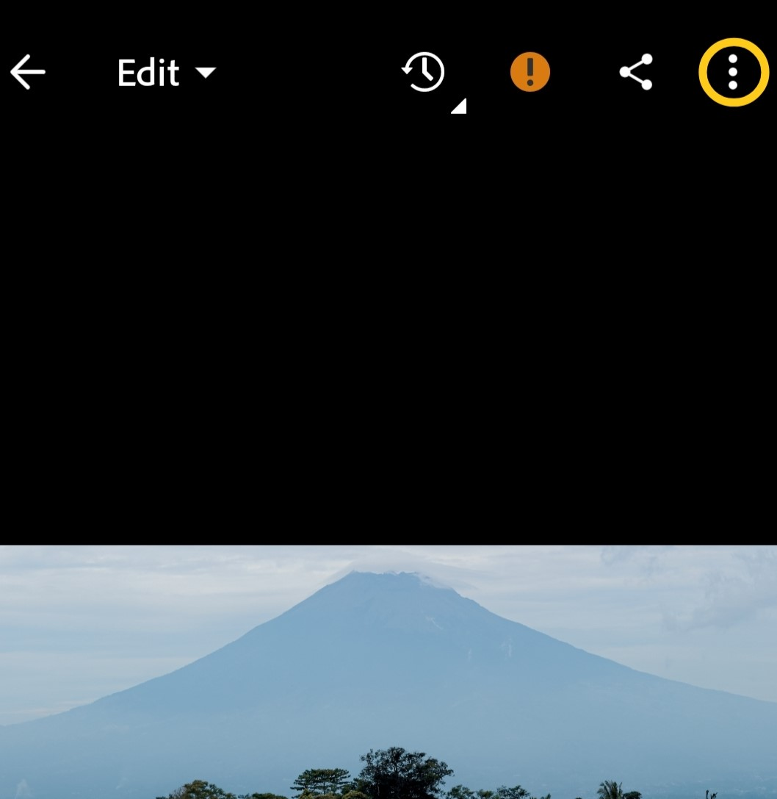
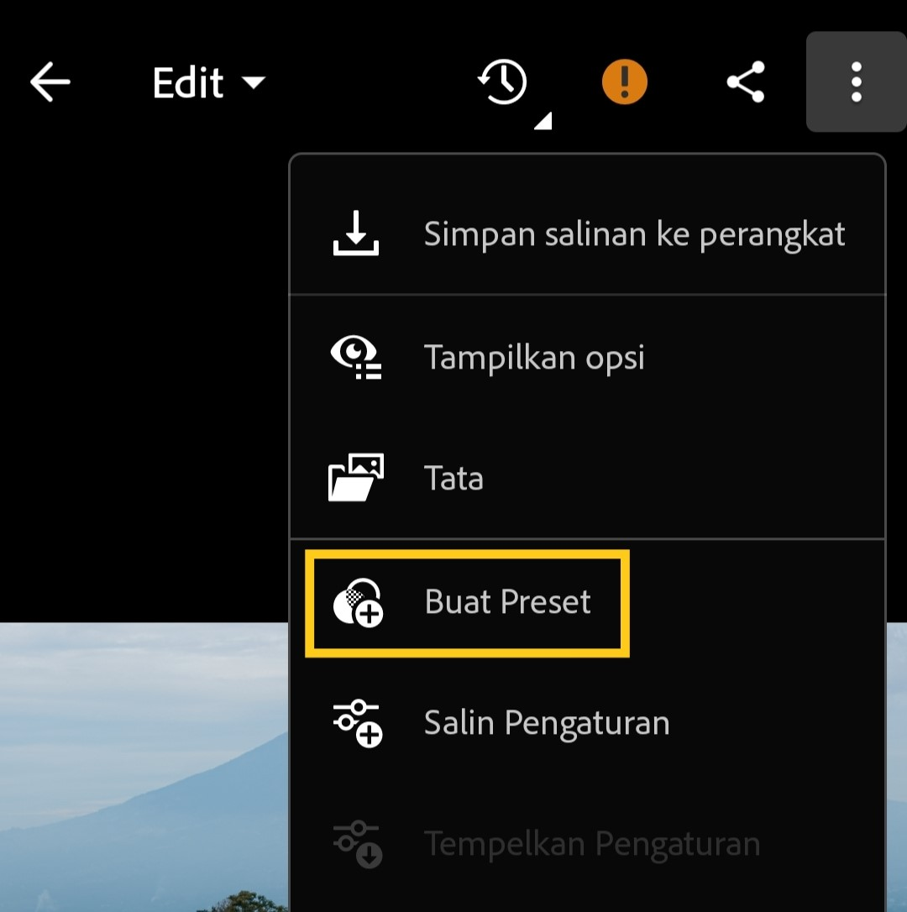
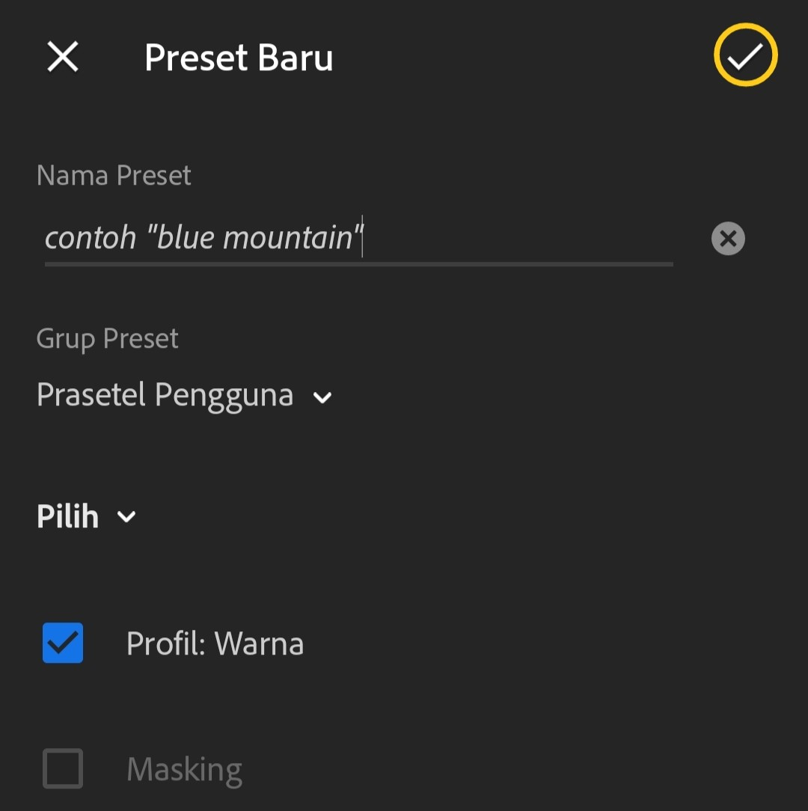

Lightroom Mobile
Tutorial cara memasang preset dengan format DNG yang kalian sudah download. Pertama Unduh preset terlebih dahulu yang sesuai untuk tema foto kalian, Kedua import foto yang sudah kalian download ke Lightroom Mobile seperti biasa Anda import foto kalian.

Ke Tiga
Klik pada bagian titik 3 di sudut kanan atas pada mode edit foto Lightroom Mobile kalian.

Ke Empat
Pilih "Buat Preset" lalu, kalian akan masuk ke halaman baru dan mengisi nama preset, letak folder preset, dan pada kolom centang tidak usah di ubah-ubah.

Selesai
Ketika sudah mengisi semua pada tahap ke empat selajutnya, klik centang di kanan atas. Preset sudah tersimpan di folder preset di perangkat Anda.